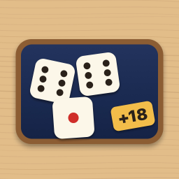

残すと何点の見こみか分かるヨット
どのサイコロを残すと、何点の見こみ？
サイコロ5つを3回までふって、12の役をうめていくヨットです。ひとりで、またはコンピュータと遊べます。ふったあと、残し方ごとに、このターンでいくつ取れそうか（見こみ点）を計算して見せます。
- 残し方の見こみ。いまの目とあとふれる回数から、残し方ごとの見こみ点を計算し、上から3つを見せます。「これにする」でその残し方に
- 入れると何点。役の表の空いている所に、いま入れたら何点かを出します
- 見こみで落とした点。ふり直すたびに、いちばんの残し方との差を足し、終わったら見せます
- 役は 1〜6・チョイス・フォーダイス・フルハウス・S.ストレート・B.ストレート・ヨット。1〜6が63点以上でボーナス35点
- 登録・課金・オンラインの対戦はありません。記録はこの端末の中だけに保存します。画面のいちばん下に小さな広告が出ます